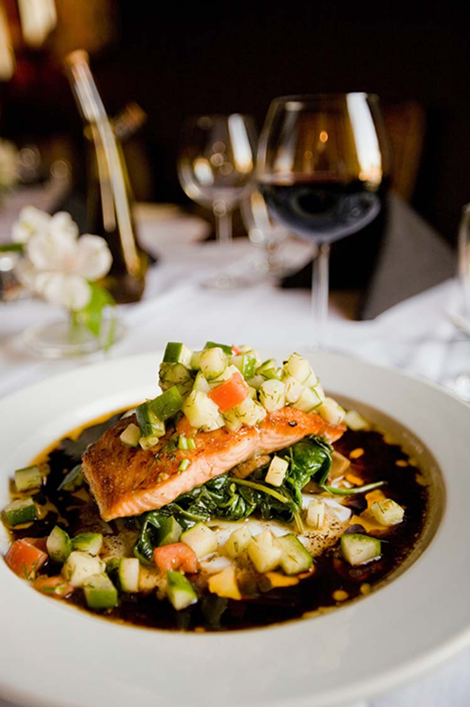
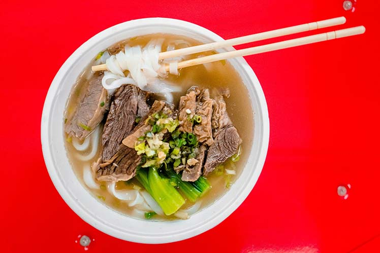

About Gallery
which is the way I like it. However, if you don't like your food that spicy, feel free to cut down on the serrano pepper and/or
cayenne pepper. Also,

Shahi Paneer
When we were kids, whenever my parents went out to an adults only party,

Indian Dahl
This is a very yummy, authentic dal. For variation, add coconut milk towards the

Red Curry
This is a rich and hearty lentil curry, dish like the more traditional India

Spicy Vegan
Abundant spices make this better than any restaurant curry I've tasted. :)